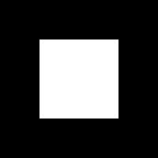
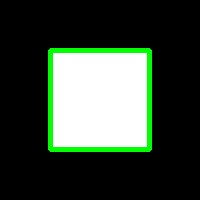

Another vital task in computer vision is contour detection, not only because of the obvious aspect of detecting contours of subjects contained in an image or video frame, but because of the derivative operations connected with identifying contours.
These operations are, namely, computing bounding polygons, approximating shapes, and generally calculating regions of interest, which considerably simplify interaction with image data because a rectangular region with NumPy is easily defined with an array slice. We will be using this technique a lot when exploring the concept of object detection (including faces) and object tracking.
Let’s go in order and familiarize ourselves with the API first with an example:
# Import Necessary library
import cv2
import numpy as np
# Create a black box of 200x200 pixels
img = np.zeros((200, 200), dtype=np.uint8)
# Add a white box of 100x100 pixels in the black box
img[50:150, 50:150] = 255
# Store new image as box.jpg
cv2.imwrite("box.jpg",img)
# Obtain thresholding between 127 and 255 intensity
ret, thresh = cv2.threshold(img, 127, 255, 0)
# Obtain contours in image with defined thresholding
image, contours, hierarchy = cv2.findContours(thresh, cv2.RETR_TREE,
cv2.CHAIN_APPROX_SIMPLE)
# Convert image to gray scale
color = cv2.cvtColor(img, cv2.COLOR_GRAY2BGR)
# Draw green contours of width 4px in the image.
img = cv2.drawContours(color, contours, -1, (0,255,0), 4)
# Store contoured image as contours.jpg
cv2.imwrite("contours.jpg",color)
Our input Image:
Output Image for Canny Edge Detection will be:
Firstly, we create an empty black image that is 200x200 pixels in size. Then, we place a white square in the center of it utilizing ndarray’s ability to assign values on a slice.
We then threshold the image, and call the findContours() function. This function has three parameters: the input image, hierarchy type, and the contour approximation method. There are a number of aspects that are of particular interest in this function:
Secondly, the hierarchy tree returned by the function is quite important:
cv2.RETR_TREE will retrieve the entire hierarchy of contours in the image, enabling you to establish “relationships” between contours. If you only want to retrieve the most external contours, use cv2.RETR_EXTERNAL. This is particularly useful when you want to eliminate contours that are entirely contained in other contours (for example, in a vast majority of cases, you won’t need to detect an object within another object of the same type).The findContours function returns three elements: the modified image, contours, and their hierarchy. We use the contours to draw on the color version of the image (so that we can draw contours in green) and eventually display it.